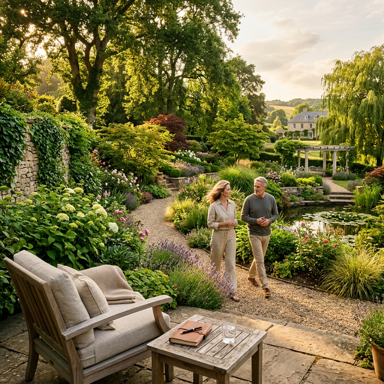

Escuela de Paisajismo. Logra tu emprender de nuestra mano. Mente, hábitos y disciplina para resultados reales.
PAISAJISMO Y SENTIDOS — PARA LATINOAMÉRICA
Paisajismo y Sentidos
FORMACIÓN ANUAL PARA PAISAJISTAS
No es un curso. Es un acompañamiento real durante todo el año para transformarte en paisajista profesional con un emprendimiento que funcione de verdad.
TU ACCESO ANUAL COMPLETO
Aprendés el oficio desde adentro: diseño, agronomía, materiales, presupuestos y dibujo técnico. Y también trabajamos lo que nadie te enseña: cómo construir un negocio con propósito.
BONUS ESPECIALES PARA LA COMUNIDAD
Al sumarte, accedés a kits digitales con descarga inmediata, pensados para potenciar tu negocio en cada etapa del año.
KIT DESCARGABLE — TEMPORADA
Todo lo que necesitás para planificar tus trabajos de la temporada: plantas, fechas clave y estrategia. Listo para usar.